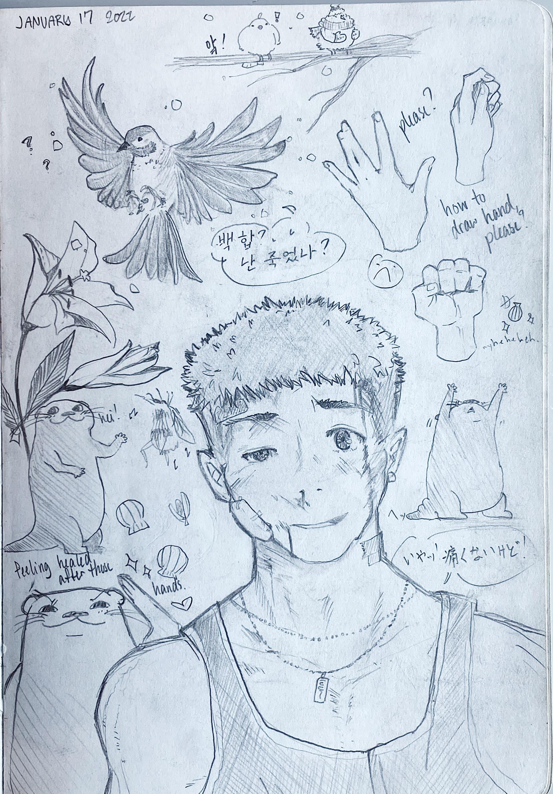

some birds, one a more genuine attempt, and two for a bit of a laugh; some hand practice (which gave me much grief); some otters (to relieve me of the grief); a lily; and a sporty, battered up guy (in the sort of style i used to draw a lot in hs)